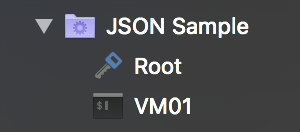

The data format
As you might've guessed, RoyalJSON uses JSON to store its data. We use regular JSON and don't plan to add any RoyalJSON specific extensions to keep in line with the JSON spec and so you can put your existing JSON skills to good use. If you're not familiar with JSON, please consult one of the many references out there.
We think the best way to introduce you to the data format is by just showing it to you. So here we go:
{
"Objects": [
{
"Type": "Credential",
"Name": "Root",
"Username": "root",
"Password": "!ehrfew9fe9gew7rgew@",
"Description": "The root account",
"ID": "000001"
},
{
"Type": "TerminalConnection",
"TerminalConnectionType": "SSH",
"Name": "VM01",
"ComputerName": "vm01",
"CredentialID": "000001",
"Description": "The first VM"
}
]
}
If you're familiar with JSON, this should be easy to parse for you and you'll probably guess most of the things we're going to explain now.
Let's walk over this sample line by line:
- Start of the JSON document.
- Start of an array (a collection) of objects.
- Start of the first object.
- Specify the type of the object. In this case, a credential.
- Specify the (display) name of the credential. In this case, "Root".
- Specify the username of the credential.
- Specify the password of the credential.
- Specify the description of the credential.
- Specify the ID of the credential.
- End of the credential object.
- Start of the second object.
- Specify the type of the object. In this case, a terminal connection.
- Specify the sub-type of the terminal connection. In this case, an SSH connection.
- Specify the (display) name of the connection.
- Specify the computer name (FQDN/IP address/etc.) of the connection.
- Specify the credential ID that this connection will reference.
- Specify the description of the connection.
- End of the connection object.
- End of the "Objects" array.
- End of the JSON document
The end result is that we'll have one credential and one SSH connection in Royal TS/X. The SSH connection will have the "Root" credential assigned to it.
Here's what the end result looks like in Royal TSX:

Note
In this case we created a Dynamic Folder in Royal TSX, directly specified the JSON content and named it "JSON Sample".
Here are a few things worth pointing out about this sample:
- The root object must always be a JSON object, NOT an array.
We call this the RoyalJSONDocument which currently only has two properties:
Objects: An array of objects (We call those RoyalJSONObjects).Name: An optional name which is used as the document name when opening ".rjson" documents.
- The
Typeproperty is one of only two properties that is required for every RoyalJSONObject. Without it, we wouldn't know which kind of object you're describing. - The
Nameproperty is the second required property of RoyalJSONObjects. Just like in Royal TS/X, every object must have a display name. - If you omit either the type or name property, Royal TS/X will throw an error.
- All other properties are optional.
- Which properties are available depends on the specified object type. For instance, credentials don't have a
Portproperty while most connections do. - If you set a property that isn't available for the specified object type it is ignored.
- The
IDproperty is quite magical. 😉 In more serious terminology: Royal TS/X internally uses GUIDs to reference objects by ID. Since not all external data sources use these kinds of IDs, we allow RoyalJSON to deal with any type of ID that can be expressed as String. Basically there are two code-paths:- When an
IDis specified as GUID: In this case we directly use the GUID to reference the object. No magic here. - When a generic String is used as
ID: This is the "magic path". In this case we generate a new internal GUID and take the generic string and store it with the object as "External ID". If other objects in your rJSON reference this external ID we look up our internal ID and make sure the reference is stored correctly in the resulting object. Also, if you assign objects that you imported through rJSON to other objects outside of your rJSON we will use the internal ID to make the references. Now, if you decide to refresh your rJSON imported objects, we cache the external to internal ID mapping and try to restore it after the import is finished. This ensures that references to objects with external IDs aren't broken on refresh.
- When an
- All of this internal/external ID magic is applied to all properties that take an ID as value.
- RoyalJSON property names are NOT case-sensitive. In other words,
"computerName": "vm01"is the same as"ComputerName": "vm01".